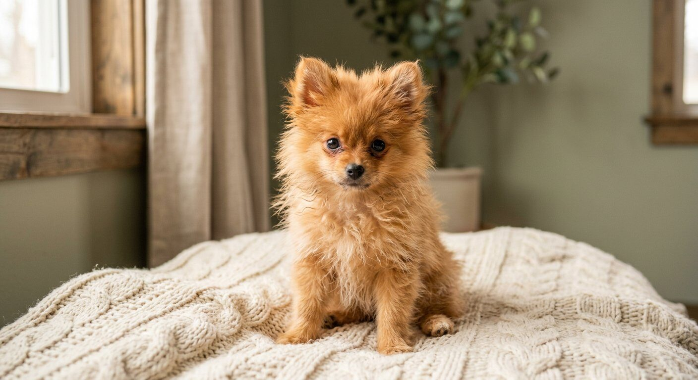

De Pomeriaan: dubbele vacht, nooit scheren.
Een van de populairste kleine gezelschapshonden van Nederland — en een van de meest verkeerd getrimde. Omdat de Pomeriaan een dubbele vacht heeft (zachte ondervacht + stuggere dekharen), is ontwollen en uitkammen de basis. Scheren tot op de huid kan blijvende schade geven. Op deze pagina alles wat je moet weten.

Zo houd je de vacht van je Pom gezond.
De dubbele vacht werkt als isolatie: warm buiten in de zomer, koud buiten in de winter. De vacht kort maken is dus géén verkoeling — goed ontwollen wél.
Wél doen ✅
- Borstel 2–3× per week met slicker + metalen kam
- Dagelijks borstelen tijdens de rui (voor- en najaar)
- Borstel in lagen tot op de huid — niet alleen de buitenkant
- Ontwollen bij een ervaren trimmer, 2× per jaar of vaker
- Vóór het wassen eerst borstelen; daarna goed droogfönen
- Gebruik in de rui een ondervacht-hark
Niet doen ❌
- Scheren of tondeuse tot op de huid
- Het "boo-model" of ander extreem kort model
- Zelf knippen zonder kennis van dubbele vachten
- Piekjes in de ugly fase afknippen (vertraagt herstel)
- Wassen zonder vooraf borstelen (vocht in wol = klitten)
Waar vervilt het eerst?
- Achter en onder de oren
- De kraag en borst
- De "broek" en rond de billijn
- Oksels en achter de poten
- Onder een tuigje of halsband
De "ugly fase"

Tussen ±3 en 12 maanden wisselt de pup van puppy- naar volwassen dubbele vacht. De vacht oogt dan dun en onregelmatig. Dat is normaal: rond 12–15 maanden is de volle vacht er weer. Blijf in deze periode vooral borstelen en wassen — en knip de piekjes niet af.
Pomeriaan trimbeurt: gemiddeld €55–€85.
Prijzen verschillen per regio, salon en de staat van de vacht. Landelijk liggen complete trimbeurten voor een Pomeriaan tussen de €55 en €85.
Prijsindicatie 2026
Indicaties op basis van openbare tarieflijsten van Nederlandse trimsalons (zie bronnen in de footer).
Verzorgingsritme
Van pup tot volle vacht.
Pomeriaan vragen, kort beantwoord.
Mag je een Pomeriaan scheren?
Nee. De dekharen groeien trager dan de ondervacht; scheren kan de hergroei blijvend verstoren en kale of pluizige plekken geven. Ontwollen en uitkammen is de juiste verzorging.
Hoe vaak moet je een Pomeriaan borstelen?
Minimaal 2–3 keer per week met een slicker en een metalen kam, en dagelijks tijdens de twee ruiperiodes. Borstel in lagen tot op de huid, zodat de losse ondervacht niet vervilt.
Wat is de "ugly fase"?
De periode tussen ±3 en 12 maanden waarin de puppyvacht plaatsmaakt voor de volwassen dubbele vacht. De vacht oogt dun en onregelmatig. Normaal — rond 12–15 maanden is de volle vacht terug.
Heeft een Pomeriaan het warm in de zomer?
Nee, mits de vacht klitvrij is. De dubbele vacht isoleert: hij houdt warmte buiten in de zomer. Een verfilte ondervacht wordt wél een warmtedeken — daarom ontwollen in plaats van scheren.
Hoe vaak naar de trimmer?
Voor de meeste Pomerianen is 2 ontwol-beurten per jaar het minimum, aangevuld met een was-droog-beurt elke 4–6 weken als je het thuis niet zelf föhnt. Bij een sterke rui kan vaker nodig zijn.
Wat kost een trimbeurt?
Een complete trimbeurt kost gemiddeld €55–€85; alleen wassen-drogen-ontwollen €35–€55. Klitten en angstig gedrag kunnen de prijs verhogen.
Vind een trimmer die Pomerianen écht kent.
Zoek een trimsalon bij jou in de buurt die ontwolt in plaats van scheert — en stel gerust de vragen van deze pagina.